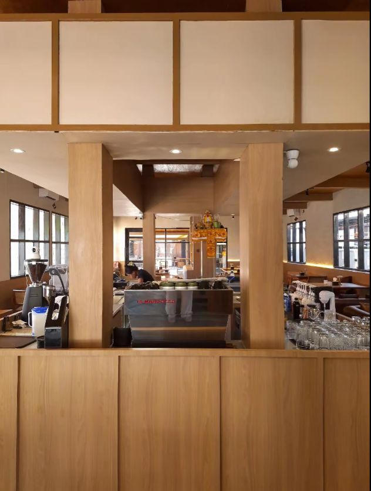
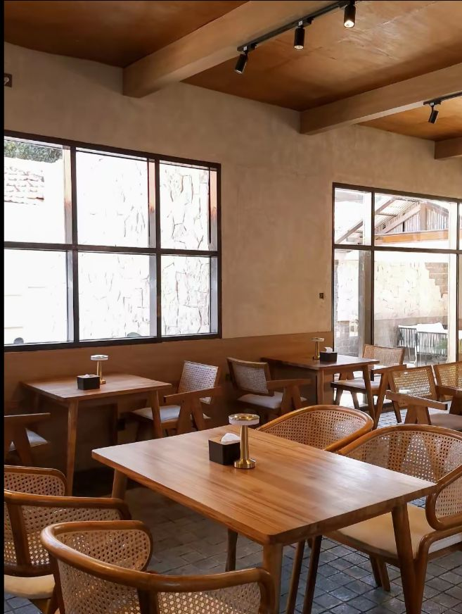
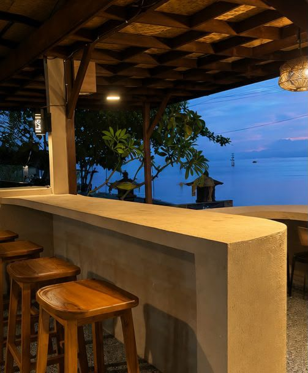

Welcome To
Maison (Maison Utara)
4.4
(340 Review)



Peta Lokasi
Located In
Singaraja, Kab. Buleleng, Bali (Kawasan Utara Kota)
Kafe baru dengan konsep French-chic yang estetik dan Instagramable, populer di kalangan mahasiswa. Menyajikan kopi specialty dan pastry/dessert pilihan.
Highlights
Amenities & Info
Lengkap
Jam Operasional
10.00 – 22.00 WITA
Konektivitas
Tersedia
Rentang Harga
Rp 20.000 – Rp 50.000
Menu Unggulan
Kopi Specialty
Pastry/Dessert
Minuman Non-Kopi
Cake